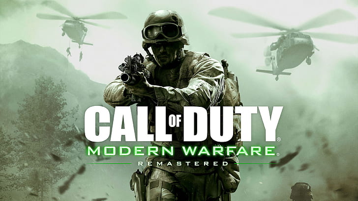

Call of Duty 2: Sucede a la primera entrega. Fue desarrollado por Infinity Ward, con la colaboración de Pi Studios, y publicado al mercado el 4 de noviembre de 2005 para PC, un mes más tarde lo hizo para Xbox 360 simultáneamente con la salida de esta videoconsola. Al igual que su predecesor está basado en la Segunda Guerra Mundial.
Call of Duty 3: Es la tercera entrega de la serie Call of Duty. El título fue publicado al mercado tanto en las consolas de nueva generación (Xbox 360, PlayStation 3 y Wii) como en Xbox y PlayStation 2. Al igual que los anteriores títulos, está basado en la Segunda Guerra Mundial.
Call of Duty 4: Modern Warfare: Considerado el mejor por mucha gente y desarrollado por Infinity Ward y distribuido por Activision este título precedido por Call of Duty 3, es el cuarto título de la serie Call of Duty y el cuarto de esta misma en ser título principal. Fue lanzado para Microsoft Windows, Macintosh, PlayStation 3, Xbox 360, Wii y Nintendo DS. La historia toma lugar en el año 2011, donde un líder radical ha ejecutado al presidente Al-Fulani que preside un país sin nombre con localización en Oriente Medio, y un movimiento «ultranacionalista» da inicio a una guerra civil en Rusia. Los conflictos son vistos desde la perspectiva de un grupo de la Fuerza de Reconocimiento del Cuerpo de Marines de los Estados Unidos y de un comando del SAS británico, estableciéndose estos en varios lugares, incluyendo Medio Oriente, Azerbaiyán, Rusia y Prípiat. En 2016 fue lanzado Call of Duty: Modern Warfare Remastered, una remasterización del juego tras la aclamación popular.5

Call of Duty: World at War: Fue publicado por Treyarch para Microsoft Windows, Wii, PlayStation 3 y Xbox 360. Se desarrollaron tres contenidos de descarga, cuyo contenido incluía nuevos mapas multijugador y cooperativo, entre ellos, para el modo de juego Nazi zombies. La ambientación de World at War se sitúa durante la Segunda Guerra Mundial, e incluye algunas batallas como la de Peleliu, Okinawa y la batalla de Berlín.
Call of Duty: Modern Warfare 2: Es la sexta entrega de la serie Call of Duty y sucesora directa de Modern Warfare, cuarta de la serie. La historia comienza 5 años después de Modern Warfare. Imran Zakhaev, el antagonista de la primera parte, fue declarado héroe de la nueva Rusia y se le homenajeó con un monumento y poniendo su nombre al Aeropuerto Internacional de Moscú-Sheremétievo. Esta vez el jugador asumirá los personajes de Joseph Allen, un soldado de los Rangers Americanos, en las primeras misiones, para luego dar lugar a James Ramírez y el sargento Gary "Roach" Sanderson de la Task Force 141. Esta vez el antagonista principal es Vladimir Makarov, un antiguo discípulo de Zakhaev, quien después de un ataque terrorista logra que los Estados Unidos, su país más odiado, sea invadido por Rusia. Aunque al final del juego el jugador se da cuenta de que no es él su mayor enemigo sino la persona que menos se imagina. Este juego cuenta con una remasterización lanzada en el año 2020. 6

Call of Duty: Black Ops: Es el séptimo título de la serie Call of Duty, el séptimo de la misma en ser título principal, y el tercer título de la serie desarrollado por Treyarch, siendo la secuela directa del anterior título, Call of Duty: World at War. Fue lanzado para Microsoft Windows, Wii, Nintendo DS, PlayStation 3, Xbox 360 y para Mac posteriormente. La historia del juego discurre durante la Guerra Fría (mayoritariamente durante la Guerra de Vietnam).
Call of Duty: Modern Warfare 3: Precedido por Call of Duty: Black Ops y secuela directa de Call of Duty: Modern Warfare 2, es el octavo título principal de la serie Call of Duty. Fue lanzado para PlayStation 3, Xbox 360, Microsoft Windows, Wii y Nintendo DS. La historia del juego comienza directamente donde acaba el argumento de Modern Warfare 2, dejando a Estados Unidos bajo el asedio de las fuerzas rusas, el ultranacionalista Vladimir Makarov en libertad, y los capitanes «Soap» MacTavish y John Price heridos y a la fuga junto con el informante ruso Nikolai y el soldado Yuri quien juega un rol muy importante en el juego. El juego será, cronológicamente, la última entrega de la serie Modern Warfare, dando fin al arco argumental comenzado en Call of Duty 4: Modern Warfare.
Call of Duty: Black Ops 2: Es el noveno juego de la saga Call of Duty y una secuela del juego de 2010 Call of Duty: Black Ops. El juego fue lanzado en 16.000 tiendas en todo el mundo a la medianoche del 13 de noviembre de 2012. Consiguió un récord de ventas por aquel entonces de 500 millones de dólares, solo superado por Grand Theft Auto V. se establece en un ambiente completamente futurista; a diferencia de sus dos antecesores, Modern Warfare 3 y Black Ops, que se establecían en un futuro cercano y en la Guerra Fría, respectivamente. La nueva ambientación se describió como una "Guerra Fría del siglo XXI". El juego incluyó dos líneas argumentales, en el año 1980 y en 2025; en este último, China y los Estados Unidos están enfrascados en una guerra a gran escala.
Call of Duty: Ghosts: La historia del juego se ambienta en un futuro cercano cuando América del Norte se sitúa al borde del colapso. Venezuela y otros países de América del Sur se habrían unido formando una alianza conocida como 'La Federación' con el objetivo de acabar con la hegemonía de los Estados Unidos, quienes previamente se confiaron del enemigo al considerarlos países "inferiores". Debido a ese error se ha pagado un alto precio al permitir que los Estados Unidos fueran atacados masivamente. Ahora, en un intento desesperado, América del Norte está intentando recuperar el control de la situación, y para ello recurren a un grupo especial, los Ghosts.
Call of Duty: Advanced Warfare: Es la undécima entrega numérica dentro de la misma saga y la primera desarrollada por las compañías Sledgehammer Games y High Moon Studios. Fue lanzado el 4 de noviembre de 2014 para PlayStation 4, Xbox One, Xbox 360, PlayStation 3 y Microsoft Windows. Al igual que anteriores títulos, tiene lugar en futuro distópico situado en el año 2054 donde Atlas, una multinacional de carácter militar, se intenta hacer con el control de los ejércitos mundiales y países. El Gobierno tratará de evitarlo utilizando a sus mejores hombres para detener a su líder, Jonathan Irons, interpretado por el actor Kevin Spacey. En su multijugador incluye nuevos movimientos como el Exo-Esqueleto con la habilidad parecida a la de un jet-pack. Este nuevo movimiento sirvió a Treyarch para desarrollar la nueva movilidad del Call Of Duty Black Ops 3. Además incluía por primera vez los suministros y por primera vez cada arma tenía diferentes modelos con diferencias en el daño, alcance, precisión... pero sin dejar de ser el mismo arma.
Call of Duty: Black Ops 3: Es la decimosegunda entrega de la saga Call of Duty y la secuela del videojuego de 2012 Call of Duty: Black Ops 2. Fue lanzado el 6 de noviembre de 2015. Desarrollado por Treyarch para PlayStation 3, PlayStation 4, Xbox One y PC. Toma lugar 40 años después de los acontecimientos de Call of Duty: Black Ops 2. El mundo tiene lugar en un futuro distópico situado en 2065 donde la ciencia y la tecnología han cambiado radicalmente a la especie humana, con la sociedad violenta y las protestas y el intento de detener el progreso de la tecnología. La tecnología militar ha avanzado hasta el punto que la robótica juega un papel principal, y se han desarrollado supersoldados. Los seres humanos están llegando al punto en el que son más máquinas que seres humanos de carne y hueso y hay muchas especulaciones sobre algún tipo de adquisición por robots. En el apartado multijugador incluye muchas novedades y nuevos movimientos como la habilidad para caminar por las paredes, deslizarse o nadar. Además de la introducción por primera vez en la saga de los Especialistas, que incluyen cada uno una arma especial y una habilidad especial.
Call of Duty: Infinite Warfare: Es la decimotercera entrega de la saga, que fue desarrollado por Infinity Ward y distribuido por Activision. Es el videojuego número trece y salió a la venta el 4 de noviembre de 2016 para Microsoft Windows, PlayStation 4 y Xbox One.
Call of Duty: WWII: Es la decimocuarta entrega de la saga. Un videojuego desarrollado por Sledgehammer Games, distribuido por Activision. Esta entrega vuelve a las raíces de la saga en la Segunda Guerra Mundial, después de Call of Duty: World at War (2008). El videojuego no se caracteriza por el sprint mecánico. En vez del movimiento mecánico, que permite al jugador deslizarse rápidamente en el suelo, WWII se caracteriza por el hit-the-deck, que permite al jugador saltar hacia delante y lanzarse al suelo para cubrirse rápidamente, similar al previo movimiento mecánica de dolphin dive. La campaña tendrá presente la ocupación de Francia, la ocupación de Bélgica y el cruce desde el río Rin hasta Alemania. La historia abarca desde entre 1944 y 1945, aunque también aparecerán otros eventos ocurridos entre 1940 y 1944 para ayudar a entender a los personajes y la historia.
Call of Duty: Black Ops 4: Es la décimo quinta y entrega de la saga. Fue anunciado oficialmente el 8 de marzo de 2018, a través de un breve tráiler y presentado por primera vez al público el 17 de mayo del mismo año, en un evento para la comunidad.7 Es el primer juego de la saga en no incluir un modo historia tradicional y enfocarse exclusivamente en los modos multijugador. Su principal novedad es la inclusión de un modo battle royale llamado Blackout para hasta 100 jugadores. Su lanzamiento se produjo el 12 de octubre de 2018, en las plataformas PlayStation 4, Xbox One y Microsoft Windows.8
Call of Duty: Modern Warfare: Es la décimo sexta entrega de la saga. El tráiler fue revelado al público el 30 de mayo de 2019 y fue lanzado el 25 de octubre de 2019. Es el primer juego de la saga Call of Duty que permite el juego cruzado entre todas las plataformas y también es el primer reinicio de una serie de Call Of Duty. El juego está ambientado en 2019, el juego ignora los eventos de Call Of Duty 4: Modern warfare, Modern warfare 2 y Modern Warfare 3.
Call of Duty: Black Ops Cold War: Es la décimo séptima entrega de Call Of Duty. Es el quinto juego de la serie Black Ops y la secuela directa del primer juego de la misma. Fue anunciada oficialmente el 19 de agosto de 2020 y fue lanzado el 13 de noviembre de 2020. Es desarrollado por Treyarch y Raven Software, en colaboración con Sledgehammer Games, High Moon Studios y Beenox. Cronológicamente está ambientado después de los eventos de Call of Duty: Black Ops y está basada en una historia real de la Guerra Fría.
Call of Duty: Vanguard: Es el decimoctavo título de la franquicia. La campaña se desarrolla durante la Segunda Guerra Mundial y se centra en un equipo de fuerzas especiales compuesto por miembros de las Naciones Aliadas. Fue lanzado el 5 de noviembre de 2021 en las consolas PlayStation 4/5, Xbox One, Xbox Series X/S y en PC.